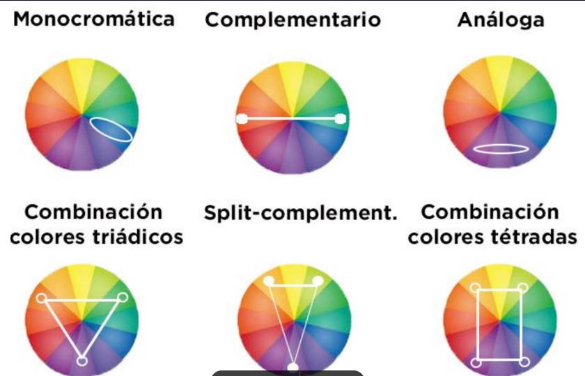

Es el resultado visual de las reglas de la rueda de la rueda del color . para crear una verdadera armonia de colores en el diseño de interiores, es importante comprender cuales combinan bien juntos y por que

es cuqalquier forma de contenido multimedia, informacion o datos creados, distribuidos y consumidos en formato digital.Es necesario tomar en cuenta : vigencia, ocurrencia, identidad, composicion , utilidad
| contenido digital | Definicion |
|---|---|
| Blog | ideal para ayudar a llegar al nicho especifico, creando contenido que resuelva sus problemas .tambien funciona como una herramienta para mejorar el posicionamiento |
| Newsletter | El email se ha vuelto una forma directa de estar en contacto constante con el nicho , ofreciendoles novedades interesantes de la marca |
| ebooks | permitiran ofrecerle al lector un contenido mas extenso , incorporado otros elementos creativos e infografias para sustentar la informacion |
| videos | son herramientas utiles para mostrar de forma muy explicita como funciona un producto o servicio |
| Imagenes | son un contenido digital de caracter visual que permitira mejorar la experiencia de los letores , mostrandoles un contenidomas atractivo |
| infografias. | Son un contenido que hara una pagina web mas atractiva.Ademas, resulta interesante para compartir en redes sociales. |
| Podcast | Esun tipo de contenido(audio) que puede incrementar tiempo de estancia de los lectores en unsitio web. |
| Glosarios,FAQ o diccionarios | Suelen ser muy utiles para responder a las dudas mas frecuentes de los usuarios.Especialmente porque ayudan en la comprension de un tema muy tecnico. |
es una herramienta de medicion y analicis de la estructurea sociales que emer4gende llas relaciones entre actores sociales diversos y que utiliza la asuncion de la que explicacion de los fenomenos sociales qyue mejpora analizando las relaciones entre actores
es un metodo de investigacion que se basa en reunir a un pequeño grupode persoinas para responder preguntas en un entorno controlado el grupo se elige ne funcion de rasgos demografico predefinidos y las pregunts estan diceñpadas para arrojar luz sobre un tema de interes dado
PASOS PARA CREAR UN FOCUA´S GROUP